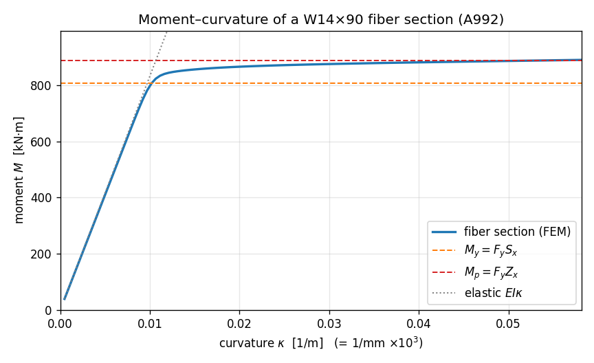

E3 — Fiber sections and moment–curvature¶
Up to now every element has been elastic: give it an A, an E, an
Iz, and it bends forever along a straight line in the moment–curvature
plane. Real steel doesn't. Push a beam hard enough and its outer fibres
yield, the section softens, and the moment tops out at a plastic
moment the elastic formulas never see.
This is the example where we stop describing a section by two numbers and start building it out of fibres — little slivers of material, each with its own stress–strain law. Stack enough of them across the cross-section and the section discovers its own moment–curvature response: elastic at first, then yielding from the extreme fibre inward, then a plateau. We'll do exactly that for a rolled wide-flange shape and watch the curve walk through two numbers you can compute by hand — the first-yield moment $M_y$ and the plastic moment $M_p$.
The section comes straight out of apeSteel,
the AISC steel-design library — we ask it for a W14×90 and it hands
back the plate dimensions and section moduli. That's the whole point of
an ecosystem: the catalogue knows the steel, apeGmsh builds the fibre
model, OpenSees solves it.
Units — N, mm, MPa
apeSteel's native base is N-mm-tonne-s, so section dimensions come back in millimetres and stresses in megapascals. We stay in that base for the whole page — lengths in mm, forces in N, moments in N·mm (printed as kN·m by dividing by 10⁶). It's a different system than the SI tutorials, but apeGmsh is unit-agnostic: pick one and be consistent.
The problem¶
Wide-flange section Fibre discretisation
bending about the (3 rectangular patches,
strong (z) axis fibres stacked in y)
bf = 368 ═══════════ ← top flange (4 fibres deep)
┌───────────┐ ─┬─ tf=18 │ │
│ │ │ │ │ ← web (24 fibres deep)
└──┐ ┌──┘ │ │ │
│ tw │ │ d = 356 │ │
┌──┘ └──┐ │ │ │
│ │ │ ═══════════ ← bottom flange (4 fibres)
└───────────┘ ─┴─
y ↑ (fibre coordinate = distance from centroid)
└→ z
W14×90, A992 steel: Fy = 345 MPa, E = 200 GPa
A doubly-symmetric section in pure bending has two moments you can write down from the section moduli alone:
First-yield moment — the moment at which the extreme fibre just reaches $F_y$, with everything inside still elastic:
$$ M_y \;=\; F_y\,S_x $$
Plastic moment — the moment when the entire section has yielded, the stress block fully plastic (tension below the neutral axis, compression above):
$$ M_p \;=\; F_y\,Z_x $$
$S_x$ is the elastic section modulus, $Z_x$ the plastic one. Their ratio $Z_x/S_x$ is the shape factor — how much reserve strength a section has past first yield. For a wide flange it's about 1.10 (most of the steel is already in the flanges, where it yields early, so there's little left to mobilise). apeSteel gives us both moduli from the catalogue:
With $S_x = 2.34\times10^{6}\ \text{mm}^3$ and $Z_x = 2.57\times10^{6}\ \text{mm}^3$ at $F_y = 345\ \text{MPa}$:
$$ M_y \approx 807\ \text{kN·m}, \qquad M_p \approx 887\ \text{kN·m}, \qquad \frac{Z_x}{S_x} = 1.10. $$
Those are the two heights the FEM curve has to pass through.
The whole model¶
The script reads top to bottom. The new ideas — a fibre section and a
ZeroLengthSection element driven by imposed curvature — are
flagged in the walkthrough below.
import numpy as np
import apeSteel
from apeGmsh import apeGmsh
from apeGmsh.opensees import apeSees
from apeGmsh.opensees.section.fiber import RectPatch
import openseespy.opensees as opspy
# --- Section properties, straight from the AISC catalogue (apeSteel) ---
# apeSteel's canonical base is N-mm-tonne-s, so lengths are mm and
# stresses MPa. We stay in that base for the whole page.
SHAPE = "W14X90"
props = apeSteel.AISCv16Catalog().get_section_properties(SHAPE)
d, bf = props.overall_depth_d, props.flange_width_bf
tf, tw = props.flange_thickness_tf, props.web_thickness_tw
Sx = props.elastic_section_modulus_strong_axis_Sx # [mm^3]
Zx = props.plastic_section_modulus_strong_axis_Zx # [mm^3]
Ix = props.moment_of_inertia_strong_axis_Ix # [mm^4]
Fy, E = 345.0, 200_000.0 # A992 steel: Fy = 345 MPa, E = 200 GPa
My, Mp = Fy * Sx, Fy * Zx # first-yield and plastic moments
# --- 1. Two (essentially) coincident nodes for a zero-length section ---
with apeGmsh(model_name="moment_curvature") as g:
a = g.model.geometry.add_point(0.0, 0.0, 0.0)
b = g.model.geometry.add_point(5e-7, 0.0, 0.0) # a hair away -> "coincident"
ln = g.model.geometry.add_line(a, b)
g.model.sync()
g.physical.add(1, [ln], name="Section")
g.physical.add(0, [a], name="Fixed")
g.physical.add(0, [b], name="Rotated")
g.mesh.structured.set_transfinite_curve(ln, 2) # exactly one element
g.mesh.generation.generate(1)
fem = g.mesh.queries.get_fem_data(dim=1)
fixed_id = int(fem.nodes.select(pg="Fixed").ids[0])
rotated_id = int(fem.nodes.select(pg="Rotated").ids[0])
# --- 2. Build the fiber section through the typed bridge ---
ops = apeSees(fem)
ops.model(ndm=2, ndf=3) # 2-D: ux, uy, thetaz
steel = ops.uniaxialMaterial.Steel02(fy=Fy, E=E, b=0.005) # ~elastoplastic
# Discretise the wide-flange into three rectangular patches, fibres
# stacked through the depth (local y) so they resolve strong-axis bending.
section = ops.section.Fiber(patches=(
RectPatch(material=steel, ny=4, nz=1, # top flange
yI=d/2 - tf, zI=-bf/2, yJ=d/2, zJ=bf/2),
RectPatch(material=steel, ny=24, nz=1, # web
yI=-(d/2 - tf), zI=-tw/2, yJ=d/2 - tf, zJ=tw/2),
RectPatch(material=steel, ny=4, nz=1, # bottom flange
yI=-d/2, zI=-bf/2, yJ=-(d/2 - tf), zJ=bf/2),
))
ops.element.ZeroLengthSection(pg="Section", section=section)
ops.fix(pg="Fixed", dofs=(1, 1, 1)) # clamp one node fully
ops.fix(pg="Rotated", dofs=(1, 1, 0)) # free only the rotation
# --- 3. Impose curvature in steps, read moment back (live domain) ---
kappa_y = (Fy / E) / (d / 2) # first-yield curvature
n_steps = 120
d_kappa = 6.0 * kappa_y / n_steps # sweep to 6 kappa_y
ts = ops.timeSeries.Linear()
with ops.pattern.Plain(series=ts) as pat:
pat.load(pg="Rotated", forces=(0.0, 0.0, 1.0)) # reference unit moment
ops.constraints.Plain()
ops.numberer.Plain()
ops.system.BandGeneral()
ops.test.NormDispIncr(tol=1e-8, max_iter=40)
ops.algorithm.Newton()
ops.integrator.DisplacementControl(node=rotated_id, dof=3, dU=d_kappa)
ops.analysis.Static()
ops.run(wipe=False) # keep the domain live
kappa, moment = [], []
for _ in range(n_steps):
opspy.analyze(1)
opspy.reactions()
kappa.append(opspy.nodeDisp(rotated_id, 3)) # imposed curvature
moment.append(-opspy.nodeReaction(fixed_id, 3)) # reacting moment
kappa = np.array(kappa)
moment = np.array(moment)
# --- 4. Check against the closed form ---
print(f"{SHAPE} (A992)")
print(f" Sx = {Sx:.3e} mm^3 Zx = {Zx:.3e} mm^3 shape factor Zx/Sx = {Zx/Sx:.3f}")
print(f" My = Fy*Sx = {My/1e6:7.1f} kN*m")
print(f" Mp = Fy*Zx = {Mp/1e6:7.1f} kN*m")
print()
print(f" curvature swept to {kappa[-1]/kappa_y:.1f} * kappa_y")
print(f" M_max = {moment.max()/1e6:7.1f} kN*m")
print(f" M_max / Mp = {moment.max()/Mp:.3f}")
slope0 = moment[1] / kappa[1]
print(f" elastic slope (M/kappa)_0 / (E*Ix) = {slope0/(E*Ix):.3f}")
Run it. You should see:
W14X90 (A992)
Sx = 2.340e+06 mm^3 Zx = 2.570e+06 mm^3 shape factor Zx/Sx = 1.098
My = Fy*Sx = 807.3 kN*m
Mp = Fy*Zx = 886.6 kN*m
curvature swept to 6.0 * kappa_y
M_max = 889.6 kN*m
M_max / Mp = 1.003
elastic slope (M/kappa)_0 / (E*Ix) = 0.984
Three things landed:
- M_max / Mp = 1.003. At six times the yield curvature the section has fully plastified, and the moment it carries is the plastic moment $M_p = F_y Z_x$ to a third of a percent. (It nudges just past because of the small strain-hardening we gave the steel; an ideal elasto-plastic steel would asymptote to $M_p$ exactly.)
- The shape factor is 1.098 — the textbook ~1.10 for a wide flange, computed by apeSteel straight from $Z_x/S_x$, and the curve really does climb from $M_y$ to that fraction higher.
- The elastic slope is 0.984 of $EI$. Before yield the section is linear with stiffness $E I_x$ — the fibre model reproduces it to 1.6 %. The small deficit is real: our three rectangular patches omit the rolled fillets between web and flange, so the fibre $I$ is a hair below the published $I_x$. (Add the fillets and it closes.)
Step 1 — A zero-length section needs two coincident nodes¶
a = g.model.geometry.add_point(0.0, 0.0, 0.0)
b = g.model.geometry.add_point(5e-7, 0.0, 0.0) # a hair away
ln = g.model.geometry.add_line(a, b)
...
g.mesh.structured.set_transfinite_curve(ln, 2) # exactly one element
A moment–curvature test isn't a beam — it's a single section, probed in
isolation. OpenSees does this with a zeroLengthSection element: two
nodes at the same point, coupled through one section. Impose a relative
rotation between the nodes and that rotation is the section curvature;
read the reacting moment and you've traced one point of the M–κ curve.
We can't draw a line of literally zero length, so we place the second
point a hair away (5e-7) and mesh it into exactly one element with
set_transfinite_curve(ln, 2) (two nodes → one element). The element
ignores its own vanishing geometric length entirely — it couples the two
nodes purely through the section.
A harmless one-line note from OpenSees
Because the two nodes aren't perfectly coincident, OpenSees prints a
one-line ZeroLengthSection::setDomain() -- ... L= 5e-07, which is
greater than the tolerance to stderr. It's harmless — the element's
response depends only on the section, not the geometric length, and
the closed-form check above proves it behaves exactly right.
Step 2 — A section built from fibres¶
steel = ops.uniaxialMaterial.Steel02(fy=Fy, E=E, b=0.005)
section = ops.section.Fiber(patches=(
RectPatch(material=steel, ny=4, nz=1, yI=d/2 - tf, zI=-bf/2, yJ=d/2, zJ=bf/2),
RectPatch(material=steel, ny=24, nz=1, yI=-(d/2-tf), zI=-tw/2, yJ=d/2 - tf, zJ=tw/2),
RectPatch(material=steel, ny=4, nz=1, yI=-d/2, zI=-bf/2, yJ=-(d/2-tf), zJ=bf/2),
))
ops.element.ZeroLengthSection(pg="Section", section=section)
Here's the genuinely new construct. Instead of handing the element an
Iz, we hand it a fibre section — a bundle of small material cells,
each carrying a 1-D stress–strain law. The constitutive law is
Steel02 (Menegotto–Pinto, here with a tiny b = 0.005 hardening so
it's almost elasto-plastic).
The section is three RectPatch blocks — top flange, web, bottom
flange — laid out in the section's local (y, z) frame, where y is
the depth direction. Each patch says "fill this rectangle with ny × nz
fibres of this material." We stack many fibres through the depth
(ny=24 in the web) because strong-axis bending varies the strain
linearly with y: the more fibres in y, the more finely the model
resolves the yield front marching in from the extreme fibre. Across the
width (z) one column is plenty — strong-axis bending doesn't vary with z.
The patch corners come straight from the apeSteel dimensions d, bf,
tf, tw. That's the whole section: no Iz, no Sx fed to the element
— it will derive its stiffness and strength from the fibres themselves.
Register materials through the bridge
Build the Steel02 with ops.uniaxialMaterial.Steel02(...), not by
constructing the dataclass directly — the bridge needs to register
the material so it can resolve the fibre's material tag at build time.
The same goes for the section (ops.section.Fiber).
Step 3 — Drive it by curvature, not by load¶
ops.fix(pg="Fixed", dofs=(1, 1, 1))
ops.fix(pg="Rotated", dofs=(1, 1, 0)) # free only the rotation
...
ops.integrator.DisplacementControl(node=rotated_id, dof=3, dU=d_kappa)
Past yield the M–κ curve flattens — near the plastic plateau a tiny
moment increment produces a huge curvature jump. If we pushed with a
prescribed moment (load control) the solver would shoot off to infinity
the instant we asked for more than $M_p$. So we control the
displacement instead: DisplacementControl imposes the rotation DOF
(dof=3) of the Rotated node in fixed increments dU = d_kappa, and
solves for the moment that produces it. The clamp on Fixed plus
fixing both translations on Rotated leaves exactly one free DOF — the
relative rotation — which, for a zero-length element, equals the section
curvature.
ops.run(wipe=False) # keep the domain live
for _ in range(n_steps):
opspy.analyze(1)
opspy.reactions()
kappa.append(opspy.nodeDisp(rotated_id, 3)) # imposed curvature
moment.append(-opspy.nodeReaction(fixed_id, 3)) # reacting moment
For a step-by-step sweep where we want a number out of every increment,
the cleanest read is the live domain: ops.run(wipe=False) builds the
model and leaves the OpenSees domain open so we can step it directly
with opspy.analyze(1) and read state back between steps. Each step,
nodeDisp(rotated_id, 3) is the curvature we imposed and
nodeReaction(fixed_id, 3) is the moment the section pushed back with
(after reactions() recomputes them). That's one (κ, M) point per step,
the whole curve in a loop.
Live domain vs. the capture pipeline
Elsewhere we record with DomainCaptureSpec →
Results.from_native — the right tool when you want a results file,
a viewer, and results.plot.*. Here a parametric sweep that pulls two
scalars per step, the ops.run(wipe=False) live-domain fast path
is the documented, lighter-weight choice. Same OpenSees underneath;
just a more direct read.
The curve¶
Plotting moment against curvature draws the section's whole story on one axis:
import matplotlib
matplotlib.use("Agg") # headless backend
import matplotlib.pyplot as plt
fig, ax = plt.subplots(figsize=(7.2, 4.4))
ax.plot(kappa * 1e3, moment / 1e6, "-", lw=2, label="fiber section (FEM)")
ax.plot(kappa * 1e3, (E * Ix) * kappa / 1e6, ":", color="0.5",
lw=1.2, label=r"elastic $EI\kappa$")
ax.axhline(My / 1e6, ls="--", color="#ff7f0e", lw=1.2, label=r"$M_y=F_yS_x$")
ax.axhline(Mp / 1e6, ls="--", color="#d62728", lw=1.2, label=r"$M_p=F_yZ_x$")
ax.set_xlabel(r"curvature $\kappa$ [1/m]")
ax.set_ylabel(r"moment $M$ [kN$\cdot$m]")
ax.set_title("Moment–curvature of a W14×90 fiber section (A992)")
ax.legend(loc="lower right"); ax.grid(alpha=0.3); fig.tight_layout()
fig.savefig("mphi-w14x90.png", dpi=120)

Read it like the textbook diagram it is. The curve tracks the dotted $EI\kappa$ line exactly until the extreme fibre hits $F_y$ at $M_y \approx 807\ \text{kN·m}$ — that's the knee. Past it the yield front eats inward, the section softens, and the moment curls over toward the plastic plateau at $M_p \approx 887\ \text{kN·m}$. The vertical gap between the two dashed lines is the shape factor — the extra 10 % the section delivers between first yield and full plastification.
Seeing it move
A single section has no shape to orbit, so there's no show_web()
view here — the M–κ curve is the visualisation. Where show_web()
earns its keep is on the member-level examples (a frame swaying, a
plate's stress field), such as the nonlinear pushover capstone.
What you just learned¶
You built a section out of material, not formulas, and watched it reproduce two hand calculations:
- Fibre sections discretise a cross-section into many small material
cells (
RectPatch/StraightLayer/FiberPoint), each with its own uniaxial law. The section derives its moment–curvature response — you never hand it anIz. - apeSteel is the section catalogue.
get_section_properties("W14X90")hands back the plate dimensions and the moduli $S_x$, $Z_x$ — and the shape factor falls out of $Z_x/S_x$. The steel library and the FEM library compose. ZeroLengthSectionprobes one section between two coincident nodes; imposed relative rotation = curvature, reacting moment = section moment.- Control displacement, not load, to walk past the plastic plateau
without the solver diverging —
DisplacementControlon the rotation DOF. - The closed forms check out: elastic slope $= EI$ (to the fillet), first yield at $M_y = F_y S_x$, plateau at $M_p = F_y Z_x$, shape factor $Z_x/S_x = 1.10$.
Where next¶
- Pushover from CAD (capstone) — put this fibre section into a real frame and push it sideways to its capacity: the same yielding, now at member scale, traced as a base-shear-vs-drift curve.
- Modal analysis — the dynamics counterpart, if
you skipped it: mass,
eigen, and natural frequencies. - The OpenSees bridge guide — the full catalogue of typed materials, sections, and elements.